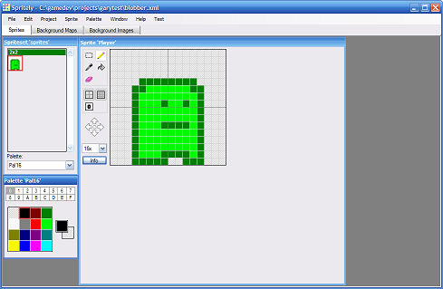
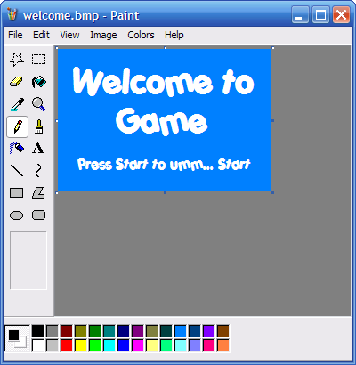
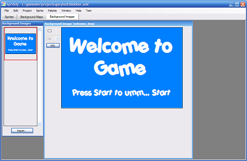
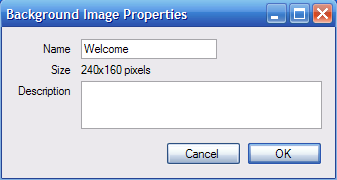
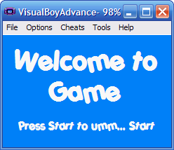

Adding a Title screen
This tutorial show you how to add a title screen to your project.
This tutorial has been tested with devkitARM release 26 and Spritely version 0.19.20 beta and verified to work for both GBA and NDS projects.
Step 1 : Create basic level
First, we can create a basic game level. For this tutorial, we're just going to add a single sprite, but you can make your level as complex as you wish by following the other tutorials.

Step 2 : Create your title screen
Create a 240x160 image for your title screen (using any drawing program that you wish).

Step 3 : Import image into Spritely
Switch to the "Background Images" tab and press the "Import..." button (located near the bottom left). Use the file select dialog to select your image.
Step 4 : Rename the image
The default image name is auto-generated from the filename. Click on the "Info" button (next to the imported image) and rename the image for the title screen to "Welcome".

Step 5 : Export project
Export your project and open the project file so that we can edit code..Step 6 : Define a new "level" for the title screen
game_state.h — Lines 11 - 12:
// The levels in our game. const int kLevel_1 = 1;
game_state.h — Lines 11 - 13:
// The levels in our game. const int kLevel_Title = 0; const int kLevel_1 = 1;
Step 7 : Modify SetupStage to support the title screen
game_state.cpp — Lines 19 - 26:
// SetupStage
// This sets up the stage for each level.
void GameState::SetupStage(int level) {
// Record which level we're in.
_level = level;
SetupStage_Level1();
}
Previously, we just always setup for Level1. Now we need to setup the stage for the appropriate level.
game_state.cpp — Lines 19 - 43:
// SetupStage // This sets up the stage for each level. void GameState::SetupStage(int level) { // Record which level we're in. _level = level; if (_level == kLevel_Title) { SetupStage_Title(); } if (_level == kLevel_1) { SetupStage_Level1(); } // TODO: Add support for other game levels here. } void GameState::SetupStage_Title() { // Set bitmap mode to display title. SetBitmapVideoMode(); // Load the background image. LoadBgImage(kBgImage_Welcome); }
Since we're using background images, we need to include the background image definitions from background_images.h. Add an #include statement at the top of the file to include these definitions.
game_state.cpp — Lines 7 - 10:
#include "background_images.h"#include "game_state.h" #include "game_utils.h" #include "object_utils.h"
Notice that we added a new routine at the end: GameState::SetupStage_Title(). When we add a new routine like this, we need to declare it in the .h file as well.
game_state.h — Lines 26 - 30:
// SetupStage // Set up the stage (backgrounds, sprites) for the each level. void SetupStage(int level); void SetupStage_Title(); void SetupStage_Level1();
Step 8 : Make sure the game starts at the title screen level
Now we need to have the game start at the title screen. Find the following code:
game_state.cpp — Lines 15 - 18:
GameState::GameState() {
// Setup the stage for level 1.
SetupStage(kLevel_1);
}
This tells the game to start at level 1. Change it to start at the title screen.
game_state.cpp — Lines 15 - 18:
GameState::GameState() { // Start with the title screen. SetupStage(kLevel_Title); }
Step 9 : Build/Run
Now if you build and run, you'll be taken to your title screen instead of to "Level 1". Unfortunately, we have no way of progressing to Level 1 from the title screen. To fix this, we'll make changes to the GameState::Update() routine.

Step 10 : Modify Update to support the title screen
In GameState::Update(), find:
game_state.cpp — Lines 83 - 85:
// Handle input and updates for level 1. Update_Level1(); }
And replace with:
game_state.cpp — Lines 83 - 102:
// Handle input for title screen.
if (_level == kLevel_Title) {
Update_Title();
}
// Handle input for level 1.
if (_level == kLevel_1) {
Update_Level1();
}
// TODO: Add support for other game levels here.
The Update_Title() code says to check for the START key and to go to level 1 if it is pressed.
As before, we added a new routine to GameState, so we need to add a declaration in game_state.h:
game_state.h — Lines 32 - 36:
// Update // This is called continuously to update the game to the next state. void Update(); void Update_Title(); void Update_Level1();
Finished!
We're done.
Links to completed project
GBA:
NDS: